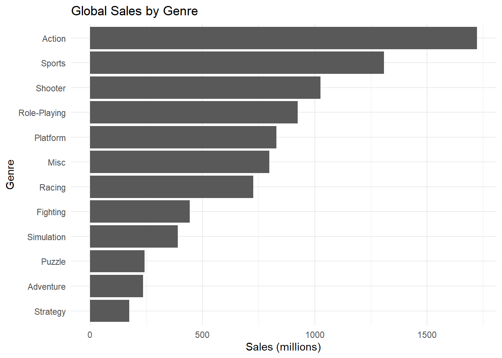
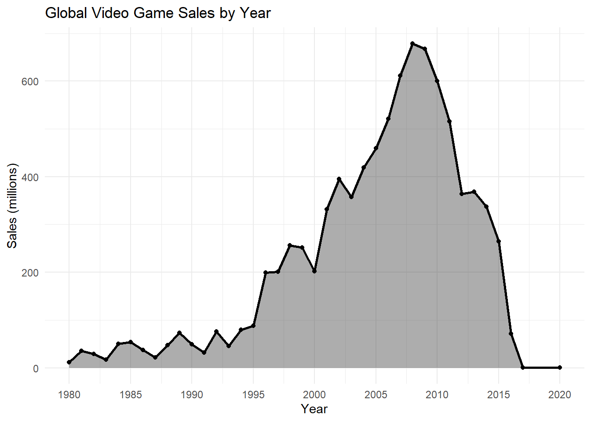
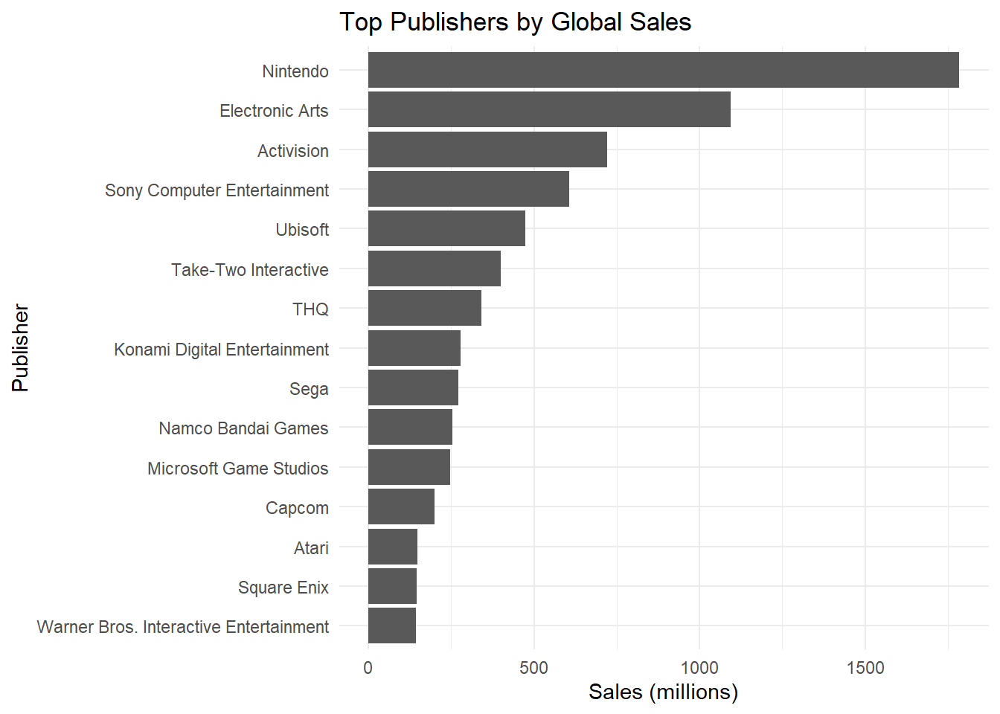
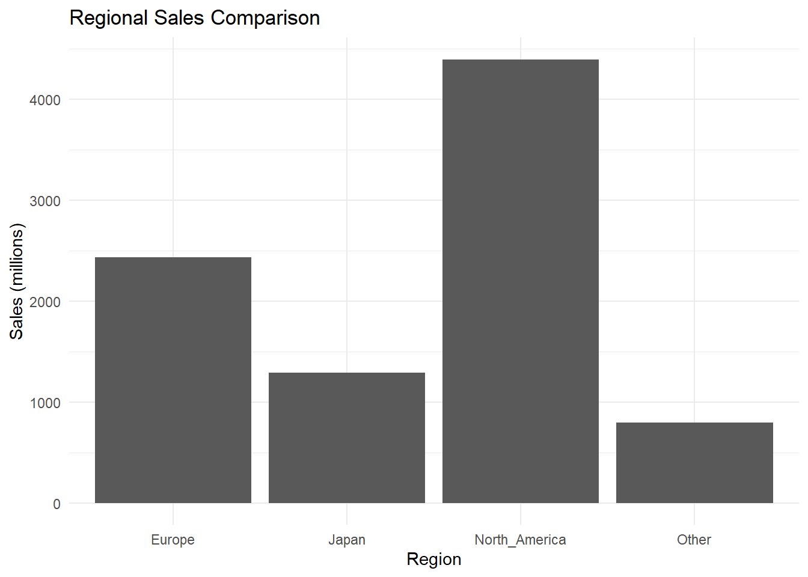
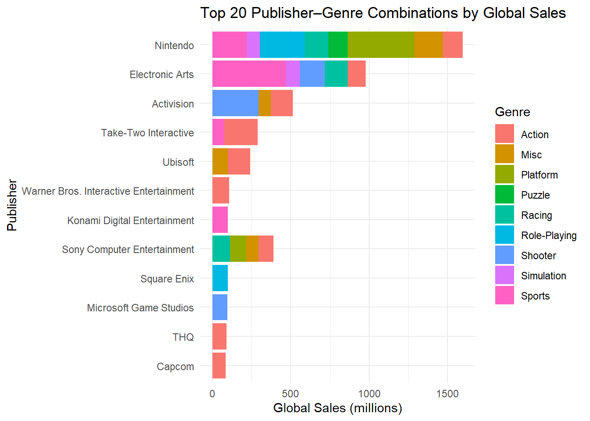

library(tidyverse)
library(knitr)
games <- read_csv("vgsales.csv", show_col_types = FALSE)Video Game Sales Analysis
Industry trends across time, genres, and publishers
1 Introduction
This project analyzes the Video Game Sales dataset, which contains information about video game sales across different platforms, genres, publishers, and regions. Video games have become one of the largest entertainment industries in the world, making sales data an interesting source for understanding market trends and consumer preferences.
The analysis focuses on several related questions. First, it examines which game genres generate the highest global sales. Second, it investigates how video game sales have changed over time and whether there are clear periods of growth and decline. Third, it explores which publishers dominate the market and how sales differ across geographic regions.
The main research questions are:
Which video game genres generate the highest sales? How have video game sales changed over time? Which publishers are the most successful in terms of global sales? How do sales differ between regions? Which publisher–genre combinations achieve the highest sales?
The analysis uses the Video Game Sales dataset obtained from Kaggle. The dataset contains information on game titles, release years, platforms, genres, publishers, and sales figures from North America, Europe, Japan, and other regions. Using data transformation, aggregation, and visualization techniques, the project aims to identify important trends and patterns within the video game industry.
2 Data Presentation
The dataset contains information about video game sales across multiple platforms, publishers, genres, and geographic regions. Each row represents a single video game, while the columns describe its commercial performance and basic characteristics. The dataset includes thousands of games released between the early 1980s and the 2010s, making it suitable for analyzing long-term trends in the video game industry.
2.1 First Rows
The first few rows of the dataset are displayed to provide an overview of its structure and the type of information available for each game.
head(games)# A tibble: 6 × 11
Rank Name Platform Year Genre Publisher NA_Sales EU_Sales JP_Sales
<dbl> <chr> <chr> <chr> <chr> <chr> <dbl> <dbl> <dbl>
1 1 Wii Sports Wii 2006 Spor… Nintendo 41.5 29.0 3.77
2 2 Super Mario B… NES 1985 Plat… Nintendo 29.1 3.58 6.81
3 3 Mario Kart Wii Wii 2008 Raci… Nintendo 15.8 12.9 3.79
4 4 Wii Sports Re… Wii 2009 Spor… Nintendo 15.8 11.0 3.28
5 5 Pokemon Red/P… GB 1996 Role… Nintendo 11.3 8.89 10.2
6 6 Tetris GB 1989 Puzz… Nintendo 23.2 2.26 4.22
# ℹ 2 more variables: Other_Sales <dbl>, Global_Sales <dbl>2.2 Structure
glimpse(games)Rows: 16,598
Columns: 11
$ Rank <dbl> 1, 2, 3, 4, 5, 6, 7, 8, 9, 10, 11, 12, 13, 14, 15, 16, 17…
$ Name <chr> "Wii Sports", "Super Mario Bros.", "Mario Kart Wii", "Wii…
$ Platform <chr> "Wii", "NES", "Wii", "Wii", "GB", "GB", "DS", "Wii", "Wii…
$ Year <chr> "2006", "1985", "2008", "2009", "1996", "1989", "2006", "…
$ Genre <chr> "Sports", "Platform", "Racing", "Sports", "Role-Playing",…
$ Publisher <chr> "Nintendo", "Nintendo", "Nintendo", "Nintendo", "Nintendo…
$ NA_Sales <dbl> 41.49, 29.08, 15.85, 15.75, 11.27, 23.20, 11.38, 14.03, 1…
$ EU_Sales <dbl> 29.02, 3.58, 12.88, 11.01, 8.89, 2.26, 9.23, 9.20, 7.06, …
$ JP_Sales <dbl> 3.77, 6.81, 3.79, 3.28, 10.22, 4.22, 6.50, 2.93, 4.70, 0.…
$ Other_Sales <dbl> 8.46, 0.77, 3.31, 2.96, 1.00, 0.58, 2.90, 2.85, 2.26, 0.4…
$ Global_Sales <dbl> 82.74, 40.24, 35.82, 33.00, 31.37, 30.26, 30.01, 29.02, 2…The structure of the dataset is examined using glimpse() to verify data types and identify variables that may require cleaning or transformation before analysis.
2.3 Column Description
- Rank – Position of the game in the overall sales ranking.
- Name – Title of the video game.
- Platform – Gaming platform on which the game was released (for example PlayStation, Xbox, Wii, or PC).
- Year – Year in which the game was released.
- Genre – Category of the game, such as Action, Sports, Racing, or Role-Playing.
- Publisher – Company responsible for publishing and distributing the game.
- NA_Sales – Total sales in North America, measured in millions of units.
- EU_Sales – Total sales in Europe, measured in millions of units.
- JP_Sales – Total sales in Japan, measured in millions of units.
- Other_Sales – Total sales in all other regions, measured in millions of units.
- Global_Sales – Combined worldwide sales, calculated as the sum of sales across all regions.
The regional sales variables make it possible to compare market preferences between different parts of the world, while the platform, genre, and publisher variables allow the identification of the most successful segments of the video game industry.
3 Data Transformation
3.1 Data Cleaning
Before performing any analysis, the dataset must be cleaned to ensure that all calculations are based on valid observations. Some records contain missing release years, which would make time-based analyses unreliable. These rows are removed using filter(!is.na(Year)).
The Year variable is converted to a numeric type using as.numeric() so that it can be used for calculations and visualizations. Finally, games released before 1980 and records with zero global sales are removed. This creates a cleaner dataset focused on commercially relevant games.
games_clean <- games |>
filter(!is.na(Year)) |>
mutate(Year = as.numeric(Year)) |>
filter(Year >= 1980, Global_Sales > 0)3.2 Feature Engineering
Instead of examining every year individually, games can also be grouped into decades such as the 1980s, 1990s, and 2000s. This allows for a clearer analysis of long-term trends in the video game industry.
games_clean <- games_clean |>
mutate(decade = (Year %/% 10) * 10)3.3 Top-N Function
To avoid repeating code, a custom function is created for selecting the highest-selling games.
top_n_sales <- function(data, n = 10) {
data |>
arrange(desc(Global_Sales)) |>
slice_head(n = n)
}3.4 Top Games
top_games <- top_n_sales(games_clean, 20)
kable(top_games)| Rank | Name | Platform | Year | Genre | Publisher | NA_Sales | EU_Sales | JP_Sales | Other_Sales | Global_Sales | decade |
|---|---|---|---|---|---|---|---|---|---|---|---|
| 1 | Wii Sports | Wii | 2006 | Sports | Nintendo | 41.49 | 29.02 | 3.77 | 8.46 | 82.74 | 2000 |
| 2 | Super Mario Bros. | NES | 1985 | Platform | Nintendo | 29.08 | 3.58 | 6.81 | 0.77 | 40.24 | 1980 |
| 3 | Mario Kart Wii | Wii | 2008 | Racing | Nintendo | 15.85 | 12.88 | 3.79 | 3.31 | 35.82 | 2000 |
| 4 | Wii Sports Resort | Wii | 2009 | Sports | Nintendo | 15.75 | 11.01 | 3.28 | 2.96 | 33.00 | 2000 |
| 5 | Pokemon Red/Pokemon Blue | GB | 1996 | Role-Playing | Nintendo | 11.27 | 8.89 | 10.22 | 1.00 | 31.37 | 1990 |
| 6 | Tetris | GB | 1989 | Puzzle | Nintendo | 23.20 | 2.26 | 4.22 | 0.58 | 30.26 | 1980 |
| 7 | New Super Mario Bros. | DS | 2006 | Platform | Nintendo | 11.38 | 9.23 | 6.50 | 2.90 | 30.01 | 2000 |
| 8 | Wii Play | Wii | 2006 | Misc | Nintendo | 14.03 | 9.20 | 2.93 | 2.85 | 29.02 | 2000 |
| 9 | New Super Mario Bros. Wii | Wii | 2009 | Platform | Nintendo | 14.59 | 7.06 | 4.70 | 2.26 | 28.62 | 2000 |
| 10 | Duck Hunt | NES | 1984 | Shooter | Nintendo | 26.93 | 0.63 | 0.28 | 0.47 | 28.31 | 1980 |
| 11 | Nintendogs | DS | 2005 | Simulation | Nintendo | 9.07 | 11.00 | 1.93 | 2.75 | 24.76 | 2000 |
| 12 | Mario Kart DS | DS | 2005 | Racing | Nintendo | 9.81 | 7.57 | 4.13 | 1.92 | 23.42 | 2000 |
| 13 | Pokemon Gold/Pokemon Silver | GB | 1999 | Role-Playing | Nintendo | 9.00 | 6.18 | 7.20 | 0.71 | 23.10 | 1990 |
| 14 | Wii Fit | Wii | 2007 | Sports | Nintendo | 8.94 | 8.03 | 3.60 | 2.15 | 22.72 | 2000 |
| 15 | Wii Fit Plus | Wii | 2009 | Sports | Nintendo | 9.09 | 8.59 | 2.53 | 1.79 | 22.00 | 2000 |
| 16 | Kinect Adventures! | X360 | 2010 | Misc | Microsoft Game Studios | 14.97 | 4.94 | 0.24 | 1.67 | 21.82 | 2010 |
| 17 | Grand Theft Auto V | PS3 | 2013 | Action | Take-Two Interactive | 7.01 | 9.27 | 0.97 | 4.14 | 21.40 | 2010 |
| 18 | Grand Theft Auto: San Andreas | PS2 | 2004 | Action | Take-Two Interactive | 9.43 | 0.40 | 0.41 | 10.57 | 20.81 | 2000 |
| 19 | Super Mario World | SNES | 1990 | Platform | Nintendo | 12.78 | 3.75 | 3.54 | 0.55 | 20.61 | 1990 |
| 20 | Brain Age: Train Your Brain in Minutes a Day | DS | 2005 | Misc | Nintendo | 4.75 | 9.26 | 4.16 | 2.05 | 20.22 | 2000 |
The previously defined function is applied to the cleaned dataset to obtain the twenty best-selling video games in the dataset. ## Genre Sales
genre_sales <- games_clean |>
group_by(Genre) |>
summarise(Total_Sales = sum(Global_Sales, na.rm = TRUE)) |>
arrange(desc(Total_Sales))
kable(genre_sales)| Genre | Total_Sales |
|---|---|
| Action | 1722.88 |
| Sports | 1309.24 |
| Shooter | 1026.20 |
| Role-Playing | 923.84 |
| Platform | 829.15 |
| Misc | 797.62 |
| Racing | 726.77 |
| Fighting | 444.05 |
| Simulation | 390.16 |
| Puzzle | 242.22 |
| Adventure | 234.80 |
| Strategy | 173.43 |
To identify which game genres generate the most revenue, the dataset is grouped by genre and the total global sales are calculated for each category.
3.5 Publisher Sales
To determine which companies dominate the video game market, the data is grouped by publisher and total global sales are calculated.
publisher_sales <- games_clean |>
group_by(Publisher) |>
summarise(Total_Sales = sum(Global_Sales, na.rm = TRUE)) |>
arrange(desc(Total_Sales)) |>
slice_head(n = 15)
kable(publisher_sales)| Publisher | Total_Sales |
|---|---|
| Nintendo | 1784.43 |
| Electronic Arts | 1093.39 |
| Activision | 721.41 |
| Sony Computer Entertainment | 607.28 |
| Ubisoft | 473.54 |
| Take-Two Interactive | 399.30 |
| THQ | 340.44 |
| Konami Digital Entertainment | 278.56 |
| Sega | 270.70 |
| Namco Bandai Games | 253.65 |
| Microsoft Game Studios | 245.79 |
| Capcom | 199.95 |
| Atari | 146.77 |
| Square Enix | 144.73 |
| Warner Bros. Interactive Entertainment | 142.34 |
Disclaimer !! Only the top 15 publishers are shown to focus on the most influential companies in the industry.
3.6 Yearly Sales
To examine changes in the video game market over time, total sales are calculated for each release year.
year_sales <- games_clean |>
group_by(Year) |>
summarise(Total_Sales = sum(Global_Sales, na.rm = TRUE))
kable(year_sales)| Year | Total_Sales |
|---|---|
| 1980 | 11.38 |
| 1981 | 35.77 |
| 1982 | 28.86 |
| 1983 | 16.79 |
| 1984 | 50.36 |
| 1985 | 53.94 |
| 1986 | 37.07 |
| 1987 | 21.74 |
| 1988 | 47.22 |
| 1989 | 73.45 |
| 1990 | 49.39 |
| 1991 | 32.23 |
| 1992 | 76.16 |
| 1993 | 45.98 |
| 1994 | 79.17 |
| 1995 | 88.11 |
| 1996 | 199.15 |
| 1997 | 200.98 |
| 1998 | 256.47 |
| 1999 | 251.27 |
| 2000 | 201.56 |
| 2001 | 331.47 |
| 2002 | 395.52 |
| 2003 | 357.85 |
| 2004 | 419.31 |
| 2005 | 459.94 |
| 2006 | 521.04 |
| 2007 | 611.13 |
| 2008 | 678.90 |
| 2009 | 667.30 |
| 2010 | 600.45 |
| 2011 | 515.99 |
| 2012 | 363.54 |
| 2013 | 368.11 |
| 2014 | 337.05 |
| 2015 | 264.44 |
| 2016 | 70.93 |
| 2017 | 0.05 |
| 2020 | 0.29 |
We can see that sales increased strongly in the 1990s and early 2000s, peaking around 2008-2010, followed by a decline. That decline is noticable in the table above and graph bellow. ## Games by genre and copies sold
Sales figures alone do not show how many games were released within each genre. Therefore, the number of games is calculated and combined with the genre sales summary.
genre_count <- games |>
group_by(Genre) |>
summarise(Game_Count = n())
genre_join <- genre_sales |>
inner_join(genre_count, by = "Genre")
kable(genre_join)| Genre | Total_Sales | Game_Count |
|---|---|---|
| Action | 1722.88 | 3316 |
| Sports | 1309.24 | 2346 |
| Shooter | 1026.20 | 1310 |
| Role-Playing | 923.84 | 1488 |
| Platform | 829.15 | 886 |
| Misc | 797.62 | 1739 |
| Racing | 726.77 | 1249 |
| Fighting | 444.05 | 848 |
| Simulation | 390.16 | 867 |
| Puzzle | 242.22 | 582 |
| Adventure | 234.80 | 1286 |
| Strategy | 173.43 | 681 |
Explanation: inner_join() combines genre sales and game counts. We can see that Action and Sports genres not only have high sales but also a large number of games.
3.7 Games by publisher and genre
To explore which publisher–genre combinations are most successful, the data is grouped simultaneously by publisher and genre.
publisher_genre_sales <- games_clean |>
group_by(Publisher, Genre) |>
summarise(
Total_Sales = sum(Global_Sales, na.rm = TRUE),
Game_Count = n(),
.groups = "drop"
) |>
arrange(desc(Total_Sales))|>
slice_head(n = 30)
kable(publisher_genre_sales )| Publisher | Genre | Total_Sales | Game_Count |
|---|---|---|---|
| Electronic Arts | Sports | 468.69 | 554 |
| Nintendo | Platform | 426.18 | 111 |
| Activision | Shooter | 295.40 | 155 |
| Nintendo | Role-Playing | 284.57 | 105 |
| Nintendo | Sports | 218.01 | 55 |
| Take-Two Interactive | Action | 211.08 | 93 |
| Nintendo | Misc | 180.67 | 100 |
| Electronic Arts | Shooter | 158.26 | 139 |
| Nintendo | Racing | 151.30 | 37 |
| Electronic Arts | Racing | 145.77 | 159 |
| Ubisoft | Action | 142.94 | 193 |
| Activision | Action | 141.82 | 308 |
| Nintendo | Action | 128.10 | 78 |
| Nintendo | Puzzle | 124.88 | 74 |
| Electronic Arts | Action | 115.34 | 182 |
| Sony Computer Entertainment | Racing | 110.57 | 65 |
| Warner Bros. Interactive Entertainment | Action | 106.69 | 150 |
| Sony Computer Entertainment | Platform | 104.06 | 66 |
| Konami Digital Entertainment | Sports | 98.15 | 279 |
| Ubisoft | Misc | 97.53 | 151 |
| Square Enix | Role-Playing | 97.00 | 128 |
| Microsoft Game Studios | Shooter | 95.46 | 28 |
| Sony Computer Entertainment | Action | 94.52 | 90 |
| Electronic Arts | Simulation | 89.53 | 116 |
| THQ | Action | 89.16 | 193 |
| Nintendo | Simulation | 85.25 | 28 |
| Capcom | Action | 85.16 | 154 |
| Sony Computer Entertainment | Misc | 80.80 | 128 |
| Take-Two Interactive | Sports | 76.77 | 151 |
| Activision | Misc | 76.55 | 103 |
Notice !!: I first tried to slice head after arrange but i could not use it latter for plotting. By slicing in kable, I make a temporary sliced version.
4 Exploratory Data Analysis
4.1 Plot 1: Sales by Genre
ggplot(
genre_sales,
aes(x = reorder(Genre, Total_Sales), y = Total_Sales)
) +
geom_col() +
coord_flip() +
labs(
title = "Global Sales by Genre",
x = "Genre",
y = "Sales (millions)"
) +
theme_minimal()
Action and Sports genres generate the highest total sales in the dataset. Action games appeal to a very broad audience and often include popular franchises that release regularly. Sports games also achieve high sales because they attract both dedicated fans and casual players, while annual releases such as football and basketball titles create consistent demand. Genres such as Strategy and Puzzle have lower sales because they target more specialized audiences.
4.2 Plot 2: Sales Through Time
year_sales <- year_sales %>%
mutate(
Year = trimws(Year), # odstrani presledke
Year = as.numeric(Year)
) %>%
filter(!is.na(Year))
ggplot(year_sales,
aes(x = Year, y = Total_Sales)) +
geom_area(alpha = 0.4) +
geom_line(linewidth = 1) +
geom_point(size = 1.5) +
scale_x_continuous(
breaks = seq(1980, 2020, by = 5)
) +
labs(
title = "Global Video Game Sales by Year",
x = "Year",
y = "Sales (millions)"
) +
theme_minimal()
The graph shows strong growth in video game sales during the 1990s and early 2000s, followed by a peak around 2008–2010 and then a gradual decline. The growth can be explained by improvements in gaming technology, increasing popularity of home consoles, and expansion of the gaming market worldwide. The peak coincides with the highly successful Wii, Xbox 360, and PlayStation 3 generation. The cause for the decline is a mix of many things, like mobile gaming, the rise of digital distribution… which may not be fully captured in the dataset.
4.3 Plot 3: Top Publishers
ggplot(
publisher_sales,
aes(x = reorder(Publisher, Total_Sales), y = Total_Sales)
) +
geom_col() +
coord_flip() +
labs(
title = "Top Publishers by Global Sales",
x = "Publisher",
y = "Sales (millions)"
) +
theme_minimal()
Interpretation: A few major publishers dominate the market. Nintendo, Electronic Arts, and Activision are the top three publishers by global sales, indicating their significant influence in the video game industry. These companies have many popular game franchises that contribute to their high sales figures. Also their strong presence across multiple platforms and genres likely contributes to their success (Seen bellow).
4.4 Plot 4: Regional Sales
region_sales <- games |>
summarise(
North_America = sum(NA_Sales, na.rm = TRUE),
Europe = sum(EU_Sales, na.rm = TRUE),
Japan = sum(JP_Sales, na.rm = TRUE),
Other = sum(Other_Sales, na.rm = TRUE)
) |>
pivot_longer(
everything(),
names_to = "Region",
values_to = "Sales"
)
ggplot(region_sales,
aes(x = Region, y = Sales)) +
geom_col() +
labs(
title = "Regional Sales Comparison",
x = "Region",
y = "Sales (millions)"
) +
theme_minimal()
Interpretation: North America contributes the largest share of sales. Europe and Japan also have significant sales. The North American market is the largest for video games, likely due to a combination of factors including a large population of gamers, strong gaming culture, and the presence of major game developers and publishers.
5 Plot 5: Sales By Genre and Publisher
ggplot(publisher_genre_sales,
aes(x = reorder(Publisher, Total_Sales),
y = Total_Sales,
fill = Genre)) +
geom_col() +
coord_flip() +
labs(
title = "Top 20 Publisher–Genre Combinations by Global Sales",
x = "Publisher",
y = "Global Sales (millions)"
) +
theme_minimal()
The plot shows that publishers tend to be particularly successful in specific genres. Nintendo generates a large proportion of its sales from Action and Adventure games, largely due to franchises such as Mario and Zelda. Electronic Arts performs especially well in Sports games because of its long-running sports series. This suggests that specialization and strong intellectual properties are important factors in publisher success.
6 Key Best-Performing Results
To complement the overall analysis, I identify the single best-performing category in each major dimension (genre, publisher, year, and publisher–genre combination).
6.1 Best Genre
best_genre <- genre_sales |>
slice_max(Total_Sales, n = 1)
kable(best_genre)| Genre | Total_Sales |
|---|---|
| Action | 1722.88 |
6.2 Best Publisher
best_publisher <- publisher_sales |>
slice_max(Total_Sales, n = 1)
kable(best_publisher)| Publisher | Total_Sales |
|---|---|
| Nintendo | 1784.43 |
6.3 Best Publisher–Genre Combination
best_publisher_genre <- publisher_genre_sales |>
slice_max(Total_Sales, n = 1)
kable(best_publisher_genre)| Publisher | Genre | Total_Sales | Game_Count |
|---|---|---|---|
| Electronic Arts | Sports | 468.69 | 554 |
6.4 Peak Sales Year
best_year <- year_sales |>
slice_max(Total_Sales, n = 1)
kable(best_year)| Year | Total_Sales |
|---|---|
| 2008 | 678.9 |
6.5 Interpretation
These results highlight the most dominant parts of the dataset. The best genre represents the most commercially successful type of game overall, while the best publisher shows which company has achieved the highest total global sales. The publisher–genre combination reveals which strategic focus has been most profitable, and the peak year indicates the strongest period in the dataset in terms of total market size.
7 Conclusion
The analysis supports three main conclusions.
First, Action and Sports are the dominant genres in the dataset, generating the highest total global sales. These genres remain consistently successful because they appeal to a wide audience and include many long-running franchises.
Second, the video game industry is highly concentrated, with a small number of publishers accounting for a large share of total sales. Companies such as Nintendo, Electronic Arts, and Activision dominate the market due to strong franchises and consistent multi-platform releases.
Third, video game sales increased strongly from the 1990s, peaked around 2008–2010, and then gradually declined. This pattern likely reflects changes in the industry, including the shift toward digital distribution and mobile gaming, which are not fully captured in this dataset. Regional differences also show that North America is the largest market, followed by Europe and Japan, while other regions contribute a smaller share of total sales.
The main limitation of this project is that the dataset does not include newer digital sales models or mobile gaming, which have become increasingly important in recent years. Despite this, the analysis provides a clear overview of long-term trends in the traditional video game market.
8 References
- Kaggle Video Game Sales Dataset
- https://www.kaggle.com/datasets/gregorut/videogamesales